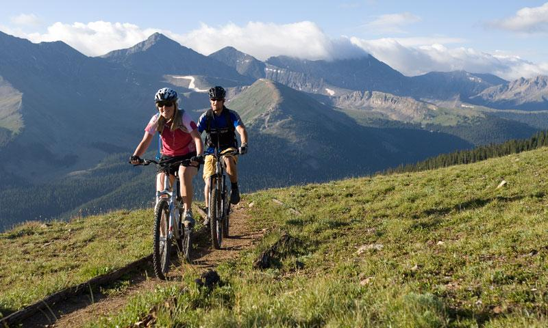
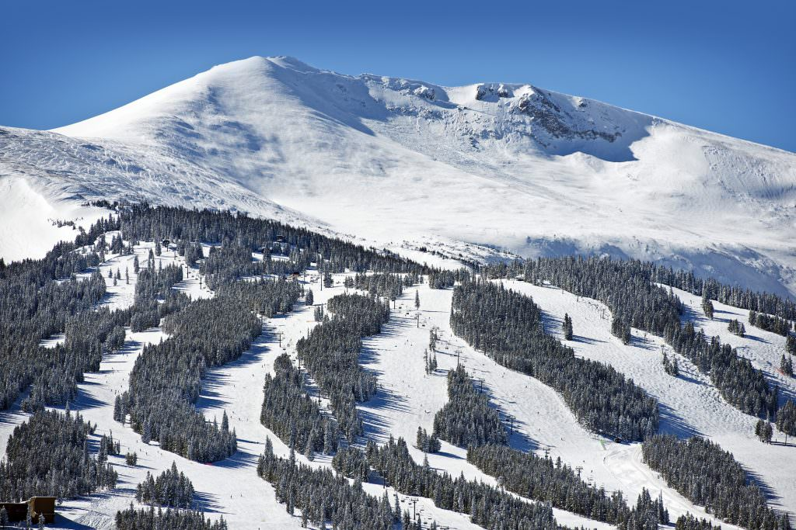

While most people think of Breckenridge as a winter destination, it has almost as many people come to visit it in the summer (nearly 1.5 million). Most of these people come to participate in the mountain activities in the surrounding areas. There are infinite hiking trails, mountain biking trails, and world class trout fishing in the blue river. But one of the biggest attractions to breckenridge in the summer is paddling. Just a short drive from breckenridge you have the Blue River, Arkansas River and The colorado river, all world class paddling rivers.
While the summer is fun the reason I go to breckenridge is for the winter. And more specifically the skiing. Breckenridge hosts all kinds of skiing, from heli skiing to cross country to resort. When most people got to breckenridge to ski they ski at one of the many resorts in the surrounding area (6 resorts within an hour of breck), ut the only Resort in breckenridge is Breckenridge ski resort.
Breckenrige Ski Resort

